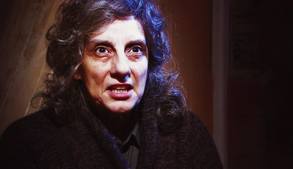
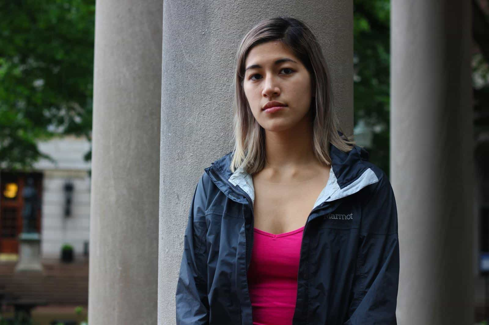

< < < Back
Game Of Thrones Actress Souad Faress Falsely Accuses Man Of Rape For Walking Past Her – Return Of Kings
The case has raised questions about the CPS’s decision-making in sexual assault cases.
— The Huffington Post UK, reporting on the outright persecution of Mark Pearson by Britain’s Crown Prosecution Service.
An award-winning actress appearing in the upcoming sixth season of Game of Thrones has been outed as the woman who falsely accused Mark Pearson of rape after he walked past her. Souad Faress claimed that Pearson digitally penetrated her, violating her inside her underwear, for several seconds in the middle of Waterloo Station in London.
Despite video evidence showing the male artist had a newspaper in one hand and was holding the strap of his backpack in the other, he was tracked down using his electronic public transportation card and charged. Furthermore, Pearson was in range of sexagenarian Faress’ body, let alone her genitals, for no more than about half a second. In January 2015, police appealed for help (archive) in finding the then 66-year-old’s “attacker”. At this stage, Mr. Pearson’s image began to circulate in the public domain.
Yet it gets worse. Faress, to try and bolster her fraudulent account, said she screamed and no one helped her. CCTV footage conclusively disproved this. To boot, Pearson did not break stride, discrediting her other claim that he smashed into her shoulder. Most shockingly of all, the lying thespian could not even point him out in an “identity parade.” That did not stop the Crown Prosecution Service from prosecuting Pearson until its representatives were rebuked by the judge and a jury quickly exonerated him.
Because of Souad Faress‘ vindictive and attention-seeking lie, Mr. Pearson endured a nightmare year of harassment from the CPS, which is under the control of rabid feminist Alison Saunders. Saunders is infamous for her promises to increase rape prosecutions. All this comes at a time when British police have been saying they will prioritize online “abuse” over burglaries and robberies at people’s homes.
Alison Saunders wants Stalinist-style quotas for “rape” prosecutions

Why do so many women obsessed with (false) rape accusations and convictions for them look like Alison Saunders?
Anyone familiar with the macabre history of Stalinist repressions will remember that Stalin often issued quotas for the numbers of victims he wanted expunged from Soviet society. When his underlings in the NKVD and its predecessors had gone through the typical scapegoats, including kulaks, suspected Tsarists, Mensheviks and members of the intelligentsia, they simply picked up random people from the street to make up the numbers. Similarly, Alison Saunders has made it her mission, as evinced by the public record, to increase the number of rape convictions.
The problem is, prosecutors have nowhere near the levels of actual rapes they want. So they have to scrape the bottom of the barrel, which is where Mark Pearson and others have come in. Even with incontrovertible video evidence that the “rape” against Faress was nothing but her malicious, ego-boosting fantasy, Saunders’ CPS wanted an additional scalp. This is nothing new, though: in 2014, an extra 5,000 rape prosecutions were initiated, resulting in only another 77 convictions.
Bear in mind, too, that rape conviction standards are already lower than for other crimes, making the lack of men found guilty of sex assaults all the more unimpressive. In the widely publicized Rolf Harris trial, for instance, it was not even proven that Harris was at a particular event in which he was meant to have abused one of his accusers, who was not sure if it happened in 1968 or 1969. Nevertheless, he was found guilty of that particular crime. But let’s not let beyond reasonable doubt get in the way of stopping rape culture!
Souad Faress is protected by guaranteed anonymity

If Souad Faress looks like this when acting, imagine how repelling she looks going to and from her yoga class, the same situation in which she falsely accused Mark Pearson.
Mark Pearson’s name has been plastered around the world. To raise awareness of his plight (and further clear his tattered name), he agreed to a television interview and warned viewers about the real risk of anyone being vexatiously prosecuted. Right now, however, Faress is blatantly using the anonymity granted to all rape and sexual assault accusers in Britain. Men accused of these crimes are almost universally named, irrespective of court process outcomes affecting them much more than anyone else. After all, the difference between guilty and innocent for them is oftentimes the difference between years of jail and freedom, albeit a freedom that links them forever to a purported sex attack.
There is one thousand times more evidence that Souad Faress lied, but she is still the beneficiary of a system dedicated to keeping her from being outed, much less charged with what she deserves: perverting the course of justice and making a false statement to police. In her 60s, she has irrefutably hit the wall of walls and making false rape accusations in these sorts of ridiculous circumstances is simply a means for her to feel sexy and desirable enough to be raped. We are ultimately dealing with a horrendously depraved woman.
Help us make life hard for Souad Faress

Souad Faress has miraculously outdone the convoluted lies of Emma Sulkowicz.
False rape cretins like Souad Faress deserve all the ridicule and hate that could ever be directed their way. They are repulsive, sociopathic oxygen thieves whose only manner of making themselves feel important is to ruin the lives of random innocents, invariably mendaciously accused men. Women like this comprise a tragically too common motif in modern society, one that is perhaps even more insidious than females entering relationships with unabashedly criminal men.
As soon as Faress faced a modicum of heat for her monstrous actions, she made her Twitter account private. If you breach her fantasy of being a sexagenarian supermodel targeted by thirsty men on the London Tube, she cannot deal with it.
Spread her name and photographs to the far corners of the internet. Avenge Mark Pearson and send the message that similar behavior will be met with fury and rage. She may have won awards as an actress, but her name is not even close to well-known enough to avoid a lifetime of being associated with the false rape accusation of all false rape accusations.
I do not know whether Faress’ Game of Thrones character will meet a sticky end in the sixth season. Yet it would be very fitting if Faress spent her final days in the sticky heat of a dungeon prison for falsely accusing Mark Pearson of a crime. Now there’s a nasty fate that someone like her really deserves.
Read More: Canadian Aurelie Nix Falsely Accuses Roosh Of A Rape Threat With Help From Journalist Emily Campbell